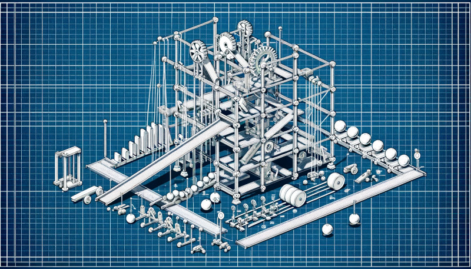
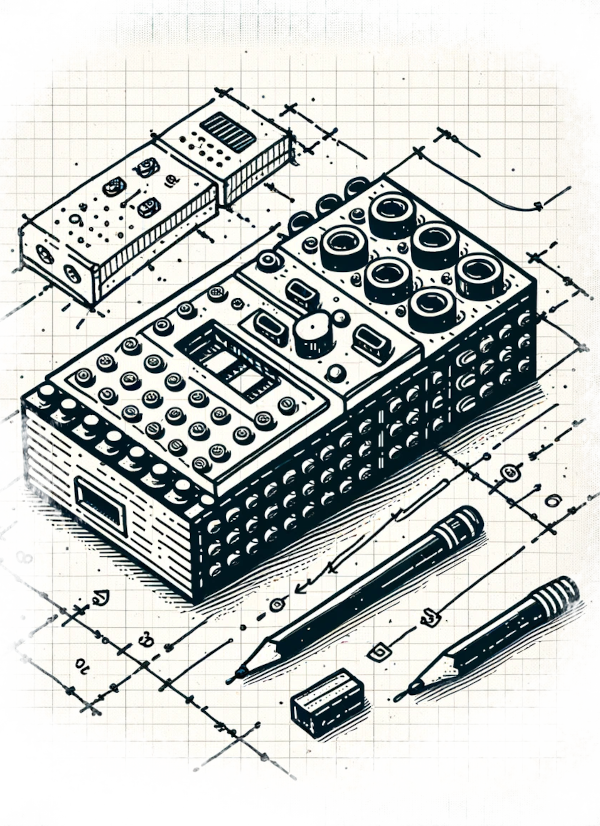

LEGO Robotics Catapult Lab

Overview
“Rube Goldberg Machines” have been tried and true (maybe stale?) hands-on projects in K-12 science classrooms; a way to teach elements such as simple machines, design thinking, motion, energy transfer, and more. In this lab, we will continue to explore the potential of educational robotics by building a Rube Goldberg machine with LEGO robotics mixed with other materials. The focus of this lab is on creativity and originality. To constrain the activity (and foster discussions between teams), each team must build a system that ends by extinguishing a candle. Teams will range in size from 2 people to 4 people depending on the total number of participants. Each team will have a LEGO Prime robotics kit and a laptop loaded with the LEGO Prime app, connected to their robot. They will have access to the shared materials, as well.

Time
60 minutes
Goals
This lab is designed as an exploration of LEGO Robotics in the context of design, creativity, play, and originality. Participants will:
- learn how to build LEGO robotics using gears, motors, and sensors
- lean to program LEGO robotics using the Prime block-based programming language
- experience and reflect on a “constructivist” learning activity
The Challenge
- combine LEGO and non-LEGO materials to create a Rube Goldberg machine
- use at least 1 LEGO sensors and 1 LEGO motors
- program the motor and sensor
- design a system that “works” but is also fun and novel
- each system must have at least 2 major components
- extinguish a birthday candle at the end of your machine’s run
Prior activities
Before the lab, teams have been formed and members have been asked to review online examples of rube goldberg machines, and given a general overview of LEGO Prime Spike.
Stock Materials
- birthday candles, matches / lighters
- LEGO Spike Prime robotics kits (1 kit per team)
- extra LEGO people, bricks / gears / axles / etc.
- crafting:
- marbles, dominoes, magnets, coins
- string, rubber bands, tape, pipe cleaners, glue
- scissors, knives
- cardboard, paper, felt, foam, plastic, wood
- small cups, bowls, and containers
- markers, paint, and other art supplies
- equipment:
- laser cutter
- cricut
- inkjet printer
- glue guns
Procedure
After a brief introduction to the project and goals, students will be given time to explore the LEGO kits. Each team will have one LEGO Prime kit and one laptop configured to program the “brick”, which is already connected. Teams will get as much help as needed from instructors, both on the technical aspects of using LEGO robots, and the design of an interesting and creative Rube Goldberg machine. The instructor will keep track of time and monitor to make sure teams are making progress and can test their work before the final demo at the end of the lab.
Timeline:
- Introduction to building and programming LEGO prime (8 minutes)
- Explanation of the challenge (2 minutes)
- Teams work on project, instructors support with both ideas and using LEGO (35 minutes)
- Teams demo their Rube Goldberg machine (15 minutes)